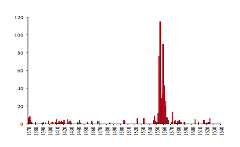
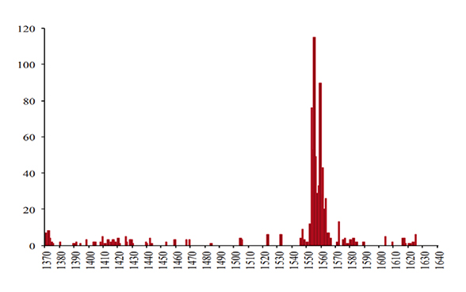
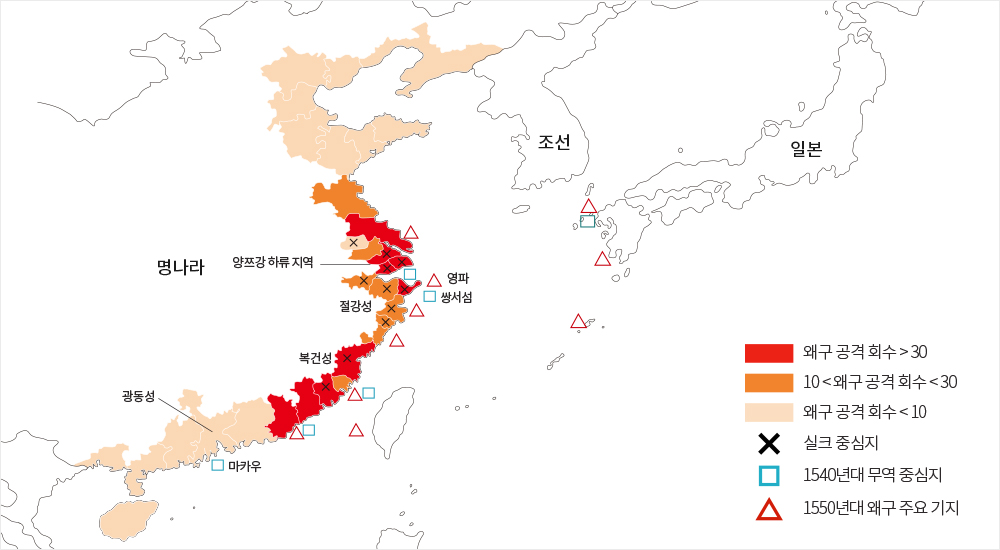
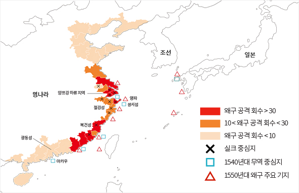

와 제 롤모델이 잡스에요!!! 아이폰 첫 출시되고 나서부터 계속 아이폰 쓰고 있는데 잡스가 너무 그리워요ㅠㅠ 지금은 돈만 벌려고 하는 것 같아서 디자인 발전도 없고ㅠㅠ와 제 롤모델이 잡스에요!!! 아이폰 첫 출시되고 나서부터 계속 아이폰 쓰고 있는데 잡스가 너무 그리워요ㅠㅠ 지금은 돈만 벌려고 하는 것 같아서 디자인 발전도 없고ㅠㅠ와 제 롤모델이 잡스에요!!! 아이폰 첫 출시되고 나서부터 계속 아이폰 쓰고 있는데 잡스가 너무 그리워요ㅠㅠ 지금은 돈만 벌려고 하는 것 같아서 디자인 발전도 없고ㅠㅠ와 제 롤모델이 잡스에요!!! 아이폰 첫 출시되고 나서부터 계속 아이폰 쓰고 있는데 잡스가 너무 그리워요ㅠㅠ 지금은 돈만 벌려고 하는 것 같아서 디자인 발전도 없고ㅠㅠ와 제 롤모델이 잡스에요!!! 아이폰 첫 출시되고 나서부터 계속 아이폰 쓰고 있는데 잡스가 너무 그리워요ㅠㅠ 지금은 돈만 벌려고 하는 것 같아서 디자인 발전도 없고ㅠㅠ
차트로 보는 해운
명나라 시기
무역의 억압과 왜구의 창궐
무역의 억압과 왜구의 창궐
경제학을 전공한 신현호 칼럼니스트는 KPMG에서 비즈니스 컨설턴트로 근무한 뒤,
국회 경제상임위의 정책연구위원으로 근무하였고 지금은 경제 칼럼니스트로 활동하고 있다.
해운, 무역, 세계화에 관한 흥미로운 차트를 <바다소리>에 소개한다.
명나라 시기 왜구의 침탈과 해금(海禁) 정책이 오늘날 해양 번영에 어떤 영향을 미쳤을까?
‘중국이 해양 무역 부문에서 왜 유럽에 뒤쳐지게 되었는가’를 생각해볼 수 있는
흥미로운 차트를 분석해본다.
글
신현호(칼럼니스트)


그림1명 왕조 시기 왜구의 공격 회수 (출처: JEH)
중국 명나라 11대 황제 가정제(재위 1521~1566년)의 묘호* 는 세종이다. 조선왕조의 세종대왕과 달리 가정제의 치세는 극도로 혼란스러운 시기였다. 전임 황제였던 정덕제가 후사 없이 죽은 뒤 가정제는 전 황제의 사촌동생으로서 황제 자리를 물려받았는데, 황제 취임 직후부터 가정제의 생부를 어떻게 자리매김할 것인가를 두고 극심한 분란을 일으켰다. 이 논쟁이 끝난 이후에도 가정제는 도교에 심취해 불사약을 만든다면서 궁녀들을 학대하고, 정치를 등한시하여 탐관오리들의 부패가 심하였고, 왜구에 의한 피해도 극심하였다.
왜구의 침탈은 그 이전에도 있었지만 특히 이 시기에 극심해서 ‘가정대왜구(嘉靖大倭寇)’라고 불릴 정도로 대규모화되었다. 명 왕조 전체 시기(1368~1644년) 중 왜구의 공격 수를 표시한 그래프 <그림1 참조>를 보면, 1550년에 갑작스럽게 왜구의 침략이 급등하여 십여 년간 지속되다가 1567년 또 갑자기 대폭 감소한 것을 볼 수 있다. 하필이면 왜 이 시기에 왜구의 침탈이 집중했는지 오랫동안 논쟁이 지속되었는데, 2014년 홍콩과학기술대학의 경제학자 쿵카이싱(龚启圣) 교수와 마치쳉(马驰骋) 교수가 통상적인 생각을 뒤엎는, 흥미로운 분석을 <경제사저널 JEH>에 발표하였다.
우선 이 시기 해적의 명칭은 왜구이지만 대부분의 구성원은 일본인이 아닌 중국인 상인들이 해적으로 변신한 것이었다. 특히 수백 척의 선박과 십만 명 이상의 선원을 휘하에 두었던 해적왕 ‘왕직’ 역시 중국 출신으로 스스로를 해상(海商)이라고 불렀다. 따라서 ‘가정대왜구’는 일본인의 침략이라기 보다 일차적으로 중국인들 사이의 문제였다.
다음으로 명의 해상 교역을 차단하는 해금(海禁) 정책이 중요한 역할을 했다. 중국은 전통적으로 무역을 장려하여 7세기 이후 한국, 일본, 동남아, 아랍 등과의 해양 무역이 번성하였지만, 명나라를 세운 홍무제는 명 건국 직후 해금 조치를 취했다. 그 이유로 중국 중심의 조공 무역체제를 확립하기 위해 민간무역을 금지했다는 설, 중국인과 외국인 사이의 접촉이 초래할 불안정을 방지하기 위한 조치였다는 설, 상업보다 농업을 중요하게 생각하는 전통사상인 중농경상(重農輕商)의 반영이라는 설 등이 제시되었다.
사실 공식적으로 해금 정책이 취해졌지만 해양 무역은 암묵적으로 용인되어 왔다. 하지만 1548~1549년 사이 가정제가 해금 정책을 엄격하게 시행하면서, 수백 척의 무역 선박이 파괴되고 수백 명의 밀수상인들이 처형되었다. 그러자 그동안 비록 불법이지만 무역활동을 종사했던 수 많은 상인들이 해적으로 변신한 것이다.


그림2가정대왜구 시기 왜구의 창궐 (출처: JEH)
명 왕실의 공식 역사서인 명실록에 등장하는 왜구의 침략 시기와 장소가 정리된 지도 <그림2 참조> 를 보면, 중국 절강성(浙江省) 및 복건성(福建省) 등 해안 지역의 실크 중심지가 집중적으로 공격을 받았다는 사실을 알 수 있다. 실크는 당시 무역의 핵심 상품이었다. 그리고 당시 해적의 주요 기지가 1540년대 무역 중심지와 매우 밀접하다는 것 또한 알 수 있다. 예컨대 해적 기지 영파(寧波)는 무역이 가장 번성하였던 쌍서(雙嶼)섬 인근이었다.
1567년 가정제의 사망 후 황제로 등극한 융경제는 부임하자마자 해금 정책을 폐지하고 무역을 합법화하였는데, 그와 동시에 왜구의 숫자는 급락하여 정상화되었다. 우리는 해양 무역으로 번영을 이룬 중국이 명 왕조 가정제 시기 무역을 억압한 후폭풍으로 해적이 창궐하고, 중요한 산업 중심지가 파괴되었던 것을 볼 수 있었다. 그리고 이것은 어쩌면 ‘중국이 왜 유럽에 뒤쳐지게 되었는가’라는 경제사의 의문점에 하나의 실마리를 주는 것일지도 모른다.
무역을 확대한다고 반드시 발전하는 것은 아니겠지만, 세계 시장에 빗장을 걸고 무역을 억압해서는 어떤 경우에도 정체를 피할 수 없다는 것 또한 분명하다.
신현호 칼럼니스트
(hyunhos@gmail.com)
* 묘호황제나 왕이 죽은 뒤 신위를 모실 때 붙이는 호
-
최고예요
322
-
좋아요
322
-
슬퍼요
322
-
그저그래요
322
-
화나요
322